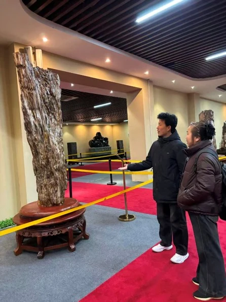
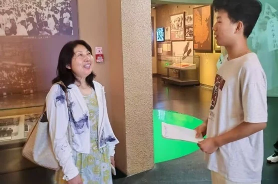
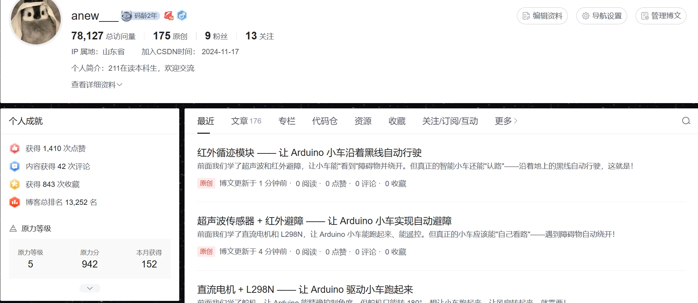
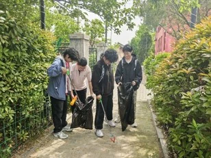
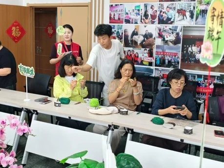
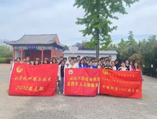
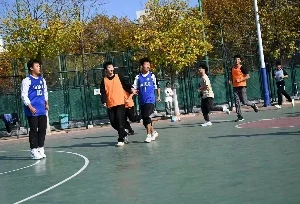
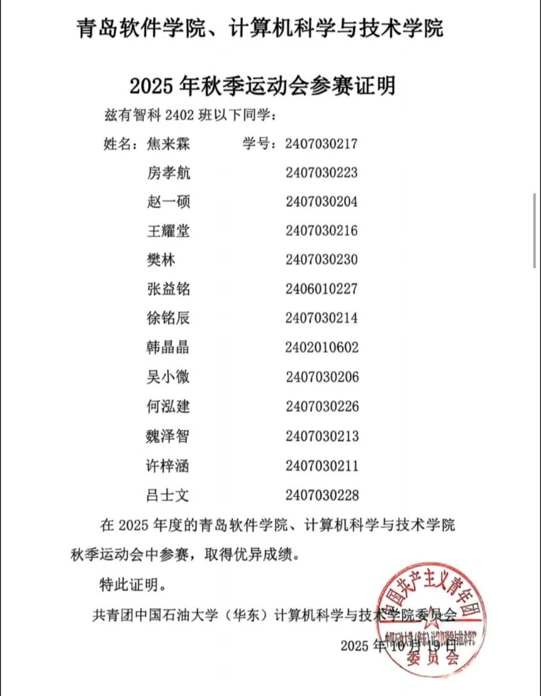
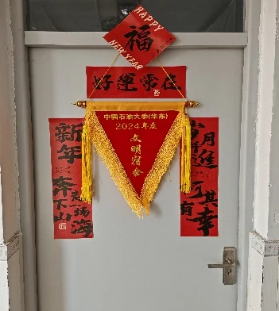

志愿服务小时
长期参与环境维护、社区陪伴、文化宣讲等志愿活动。
EXPERIENCE
从志愿服务、文化宣讲到集体活动，在真实协作中理解责任、沟通与行动。
长期参与环境维护、社区陪伴、文化宣讲等志愿活动。
在文化场馆与社会实践中完成五次主题讲解。
参与篮球赛、院运会、支教协作与宿舍共建等集体活动。
CULTURAL OUTREACH
参与青岛海军博物馆、青岛一战遗址等相关实践，并在齐河县博物馆担任讲解员，累计完成 5 次博物馆宣讲。准备讲解内容、面对参观者表达并进行现场交流，让我逐步提升信息组织、临场沟通和公共表达能力。




与同学共同清理公共区域，在分工协作中完成环境维护，把志愿服务落实到具体行动。

参与面向老人的志愿活动，制作艾草锤、手织粽子，在交流和协作中体会陪伴的价值。

参与校支教队集体实践，在活动准备、现场配合与团队沟通中承担力所能及的工作。

参与学院篮球活动，在对抗与配合中体会团队分工、沟通和共同承担。

参加学院运动会并进入男子 200 米决赛，获得第七名。训练与比赛进一步磨炼了耐力与意志。

参与宿舍环境维护和日常共建，宿舍获评优秀，在共同劳动中增强责任意识。